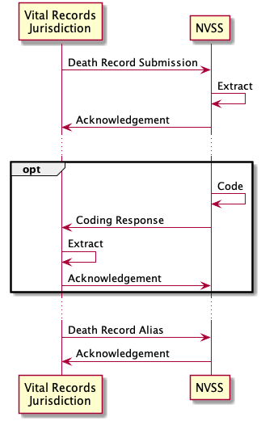
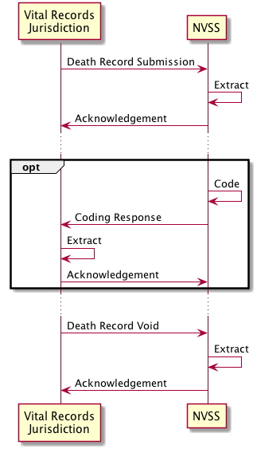
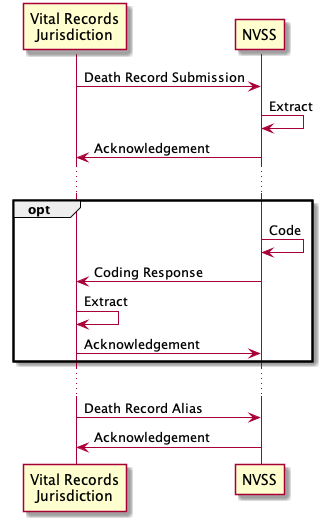
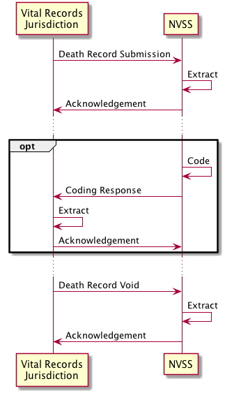

http://cdc.gov/nchs/nvss/fhir/vital-records-messaging/CodeSystem/VRM-coded-pregnancy-status-cs
http://cdc.gov/nchs/nvss/fhir/vital-records-messaging/CodeSystem/VRM-observation-cs
This fragment is available on downloads.html
This publication includes IP covered under the following statements.
| Type | Reference | Content |
|---|---|---|
| web | snomed.info | 276507005 |
| web | snomed.info | 281050002 |
| web | snomed.info | 17369002 |
| web | snomed.info | 57797005 |
| web | snomed.info | 34801009 |
| web | snomed.info | 44782008 |
| web | nightingaleproject.github.io | NCHS Vital Records FHIR Messaging v1.0.1 |
| web | nightingaleproject.github.io | NCHS Vital Records FHIR Messaging v2.0.0 |
| web | nightingaleproject.github.io | VRFM STU1.0.1 |
| web | nightingaleproject.github.io | VRFM STU2.0.0 |
| web | browser.ihtsdotools.org |
Use of Inactivated SNOMEDCT Code #103693007 "Diagnostic Procedure"
|
| web | browser.ihtsdotools.org | The code for the VRDR STU2.2 Death Certification Procedure is SNOMEDCT #103693007 "Diagnostic Procedure (procedure)" . This is a poor choice since it is not descriptive, and it is also current in "inactive" state. This may cause validation errors or warnings on VRDR STU2.2 conformant data. These errors or warnings should be ignored since an inactive SNOMEDCT code remains valid. In VRDR STU3, the code has been changed to a much more descriptive and active code – SNOMEDCT #308646001 Death certification (procedure) |
| web | browser.ihtsdotools.org | The code for the VRDR STU2.2 Death Certification Procedure is SNOMEDCT #103693007 "Diagnostic Procedure (procedure)" . This is a poor choice since it is not descriptive, and it is also current in "inactive" state. This may cause validation errors or warnings on VRDR STU2.2 conformant data. These errors or warnings should be ignored since an inactive SNOMEDCT code remains valid. In VRDR STU3, the code has been changed to a much more descriptive and active code – SNOMEDCT #308646001 Death certification (procedure) |
| web | en.wikipedia.org | Both Bundle.link and Bundle.entry.link are defined to support providing additional context when Bundles are used (e.g. HATEOAS ). |
| web | snomed.info | 276507005 |
| web | snomed.info | 281050002 |
| web | snomed.info | 17369002 |
| web | snomed.info | 57797005 |
| web | snomed.info | 34801009 |
| web | snomed.info | 44782008 |
| web | github.com | Items 1, 2, 3 above are within the scope of the vrdr-dotnet open source project , an implementation of the FHIR messaging infrastructure at a jurisdiction could leverage this project to accelerate development. |
| web | github.com | The source code for this Implementation Guide can be found on Nightingale GitHub https://github.com/nightingaleproject/vital_records_fhir_messaging_ig . |
| web | nightingaleproject.github.io | The version of VRFM in production use by NCHS and Jurisdictional Vital Records Offices for exchange of death records is VRFM 1.0.1 . |
| web | github.com | This FHIR Implementation Guide supersedes a previous description of the Vital Records FHIR Messaging interface that can be found here . All maintenance of content since November 2021 is taking place in this document only and is managed via GitHub . |
| web | github.com | This FHIR Implementation Guide supersedes a previous description of the Vital Records FHIR Messaging interface that can be found here . All maintenance of content since November 2021 is taking place in this document only and is managed via GitHub . |
| web | r20.rs6.net | 2022 Mortality Data reference |
| web | github.com | Nightingale is an open source project and welcomes all contributors. The source code for this IG is maintained in the Nightingale Github . Instead of just suggesting a change, consider creating a branch, making the change, and submitting a pull request. All of our profiling work is done in FHIR Shorthand and all narrative content in markdown (specifically, Kramdown ). We suggest using the Visual Studio Code editor with the FHIR Shorthand plug-in . For more information on how to get started with IG development, visit the FSH School . |
| web | kramdown.gettalong.org | Nightingale is an open source project and welcomes all contributors. The source code for this IG is maintained in the Nightingale Github . Instead of just suggesting a change, consider creating a branch, making the change, and submitting a pull request. All of our profiling work is done in FHIR Shorthand and all narrative content in markdown (specifically, Kramdown ). We suggest using the Visual Studio Code editor with the FHIR Shorthand plug-in . For more information on how to get started with IG development, visit the FSH School . |
| web | code.visualstudio.com | Nightingale is an open source project and welcomes all contributors. The source code for this IG is maintained in the Nightingale Github . Instead of just suggesting a change, consider creating a branch, making the change, and submitting a pull request. All of our profiling work is done in FHIR Shorthand and all narrative content in markdown (specifically, Kramdown ). We suggest using the Visual Studio Code editor with the FHIR Shorthand plug-in . For more information on how to get started with IG development, visit the FSH School . |
| web | marketplace.visualstudio.com | Nightingale is an open source project and welcomes all contributors. The source code for this IG is maintained in the Nightingale Github . Instead of just suggesting a change, consider creating a branch, making the change, and submitting a pull request. All of our profiling work is done in FHIR Shorthand and all narrative content in markdown (specifically, Kramdown ). We suggest using the Visual Studio Code editor with the FHIR Shorthand plug-in . For more information on how to get started with IG development, visit the FSH School . |
| web | fshschool.org | Nightingale is an open source project and welcomes all contributors. The source code for this IG is maintained in the Nightingale Github . Instead of just suggesting a change, consider creating a branch, making the change, and submitting a pull request. All of our profiling work is done in FHIR Shorthand and all narrative content in markdown (specifically, Kramdown ). We suggest using the Visual Studio Code editor with the FHIR Shorthand plug-in . For more information on how to get started with IG development, visit the FSH School . |
| web | github.com | This IG is based on the FHIR Messaging for NVSS authored by Marc Hadley (MITRE). The data element descriptions in that document have now been captured as a FHIR specification in this guide, which incorporates all of the content from the original guide. Both the original document and this Implementation Guide were developed by the MITRE corporation under contract to the Division of Vital Statistics, National Center for Health Statistics, of the Centers for Disease Control. |
| web | fshschool.org | This IG was authored by the MITRE Corporation using FHIR Shorthand (FSH) and SUSHI , a free, open source toolchain from MITRE Corporation . |
| web | www.mitre.org | This IG was authored by the MITRE Corporation using FHIR Shorthand (FSH) and SUSHI , a free, open source toolchain from MITRE Corporation . |
| web | github.com | The jurisdiction (MA) generates Death Record 537 based on the data in the Record 1 column of the spreadsheet , and then builds Death Record Submission Message 537 and sends this to NCHS via the NCHS Messaging API. |
| web | github.com | The jurisdiction (MA) generates Death Record 537 based on the data in the Record 1 column of the spreadsheet , and then builds Death Record Submission Message 537 and sends this to NCHS via the NCHS Messaging API. |
| web | github.com | NCHS receives the message, and sends Death Record Submission Acknowledgement 537 to the jurisdiction for receipt of that message; you can tell what message is being acknowledged by comparing the MessageHeader.response.identifier in the acknowledgement to the MessageHeader.id of the original message. |
| web | github.com | Some time later, NCHS sends Cause of Death Coding Message 537 to the jurisdiction, and the jurisdiction responds with Cause of Death Coding Message Acknowledgement 537 |
| web | github.com | Some time later, NCHS sends Cause of Death Coding Message 537 to the jurisdiction, and the jurisdiction responds with Cause of Death Coding Message Acknowledgement 537 |
| web | github.com | Some time later, NCHS sends Demographic Coding Message 537 to the jurisdiction, and the jurisdiction responds with Demographic Coding Message Acknowledgement 537 |
| web | github.com | Some time later, NCHS sends Demographic Coding Message 537 to the jurisdiction, and the jurisdiction responds with Demographic Coding Message Acknowledgement 537 |
| web | github.com | Death Record 537 |
| web | github.com | Death Record Submission Message 537 |
| web | github.com | Death Record Submission Acknowledgement 537 |
| web | github.com | Cause of Death Coding Message 537 |
| web | github.com | Cause of Death Coding Message Acknowledgement 537 |
| web | github.com | Demographic Coding Message 537 |
| web | github.com | Demographic Coding Message Acknowledgement 537 |
| web | github.com | Death Record 538 |
| web | github.com | Death Record Submission Message 538 |
| web | github.com | Death Record Submission Acknowledgement 538 |
| web | github.com | Cause of Death Coding Message 538 |
| web | github.com | Cause of Death Coding Message Acknowledgement 538 |
| web | github.com | Demographic Coding Message 538 |
| web | github.com | Demographic Coding Message Acknowledgement 538 |
| web | github.com | Death Record 539 |
| web | github.com | Death Record Submission Message 539 |
| web | github.com | Death Record Submission Acknowledgement 539 |
| web | github.com | Cause of Death Coding Message 539 |
| web | github.com | Cause of Death Coding Message Acknowledgement 539 |
| web | github.com | Demographic Coding Message 539 |
| web | github.com | Demographic Coding Message Acknowledgement 539 |
|
LayeredArchitecture.png
|
|
alias.png  |
|
cdc.svg
|
|
error.png |
|
recode.png
|
|
retry.png
|
|
retry2.png |
|
retry3.png
|
|
submission.png
|
|
tree-filter.png
|
|
update.png
|
|
void.png  |